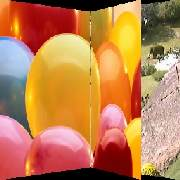

A (first) clip is flipped either left or right or up or down as viewing in an album revealing B Clip. All avisynth+ supported formats can be input. This is Thread Safe.
| Description | Name | Type | Limits | Default |
| A clip | clip | none | ||
| B clip | clip | none | ||
| Overlapping time in seconds | float | not more than clip length , must result in >2 frames. | none | |
| direction of Flip | dir | string | "up", "down", "B", "A" | "A" |
|  | |
|
| Back to Synopsys. | ||
| Back to my page | ||
| back to Avisynth |